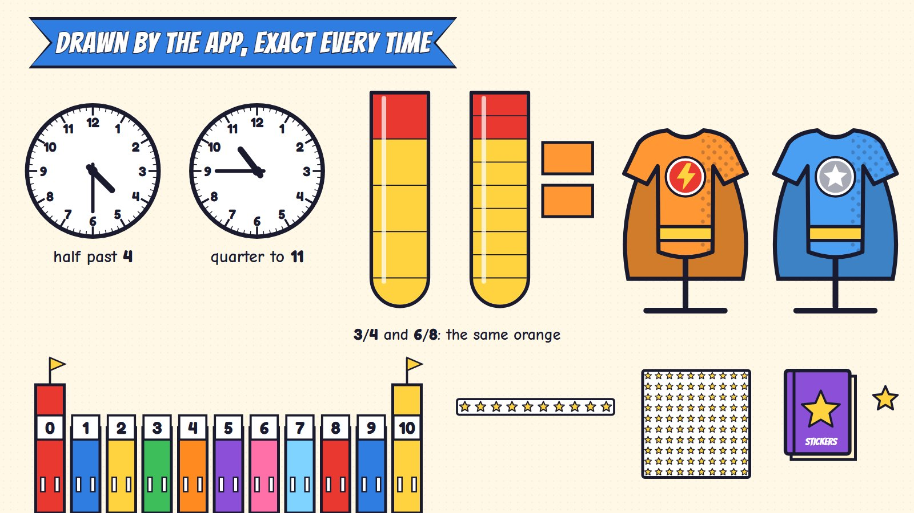
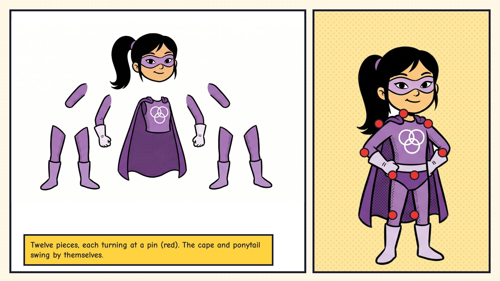

The learning engine is the first plan's (the skill map, five steps for every skill, the feedback rules, stars for first tries, reviews, the parents' page; see its technical page). This page covers what is new here: the comic look, the panel engine, episodes made from parts, how answers are checked and what is saved.
| What | How it is made | Why |
|---|---|---|
| Scenes | Inked pictures, one per place (Gemini drafts now; an illustrator or cleaned-up drafts later). | Rich detail costs nothing at run time: it is just a picture. |
| Characters | Each hero, Muddle and the avatar are drawn as flat pieces (head, body, arms, legs, cape, hair) and rigged in Rive or Spine, with the cape and hair swinging by themselves. | Bold outlines and flat colours come apart cleanly; comic poses are easy to key. |
| The maths | Panels, counts, clocks, tubes, suits, rooftops and stickers are drawn by the app in the same inked look. | Counts, times and colours must be exact and change every round. |


A page is a list of panels (where, how big, what is in each). The same engine lays out a mission, the day's page and the Power Book, and the panels re-flow for a phone held upright.
Things cross a gutter as a short move from one panel to the next. A page turn is a 1.5-second flip that shows the result; reduced motion (a setting) makes it a quick fade.
Every panel has three looks: a pencil sketch (not yet), inked (now) and coloured (done). They are three versions of the same picture, made once.
An episode is put together from parts: a place in the city, a Muddle story (about 40, each with three or four titles), the three missions the learning engine picks for that child that day, and Muddle's Mix-up for that place. The cover is the child's avatar in their own costume, with the day's hero and title. A month of issues never repeats a title.
| Activity | The check | Tolerance |
|---|---|---|
| Kitten Rescue | kittens in the basket = the number asked; each lit once | exact |
| Missing Pieces | the shape has the property needed (rolls, stacks, pointy top) | any shape with it |
| Rooftop Hops | the landing roof = start ± hops | exact |
| Clock Tower | both hands' angles against the time asked | the minute hand within half a minute step |
| Echo's Copies | copies × things in each = the total | exact; any way that works |
| Colour Lab | equal parts; each colour's fraction against the recipe | exact (parts within 5% from age 9) |
| Sticker Pack | books, sheets, strips and stickers against the number | exact |
| Speed | answer and time per fact | gold: first try, ≤ 3 s (4 s Grade 1), on 3 different days |
The date, the title, the day's hero, the costume worn, the stars and points: a few dozen bytes. The cover is drawn again from the recipe, so a shelf can hold years of issues.
The costume pieces and colours (each colour is its fraction recipe), the hero name, the Power Book's state for every skill.
Every fact's last ten answers and times (for the ranks and the Power Grid), and the best run's timings for the afterimage (about 30 numbers).
Each activity has a test robot that reads the question (never the answer stored in the code), makes the moves a child would (taps, drags, swipes, hand turns), checks where everything landed, and makes one planned mistake per session to check the tip. The robots run on every change, at every age. Everything works with one finger or a mouse, so the robots need no special touch tricks.